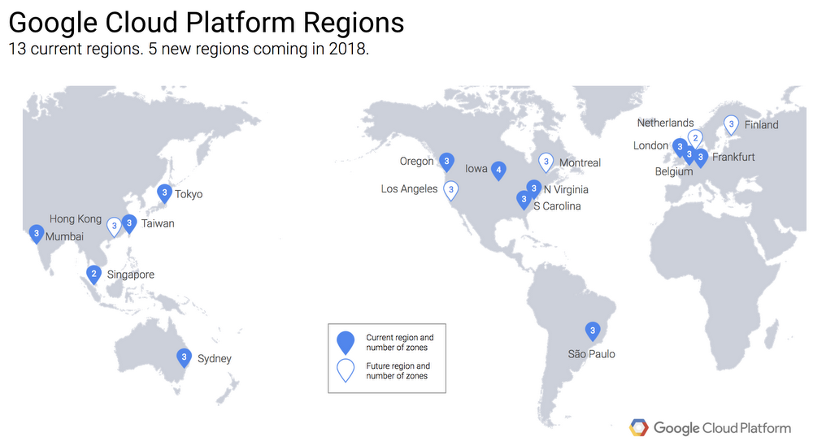

Google Cloud Platform (GCP)
Google позиционирует себя как" открытого " поставщика, с акцентом на переносимость, которая сосредоточена на экосистемах с открытым исходным кодом. Как и его конкуренты, однако, Google обеспечивает ценность за счет автоматизации операций в масштабе, и он не открывает исходный код этих собственных преимуществ.
Компания GCP обладает хорошо реализованным, надежным и эффективным ядром фундаментальных возможностей IaaS и PaaS, включая растущее число уникальных и инновационных возможностей, даже несмотря на то, что ее спектр услуг не так широк, как у других лидеров рынка. Google был наиболее дифференцирован на переднем крае ИТ, с глубокими инвестициями в аналитику и ML, и многие клиенты, которые выбирают Google для стратегического внедрения, имеют приложения, которые привязаны к BigQuery.
Google потенциально может помочь клиентам в процессе трансформации операций с помощью своей инженерной программы надежности клиентов (в настоящее время предлагается непосредственно ограниченному числу клиентов, а также в сочетании с Pivotal и Rackspace). Программа использует подход общих операций, чтобы научить клиентов запускать операции так, как это делают инженеры по надежности сайтов Google
Продукты Google Cloud Platform
| Вычисление |
Хранение | Сеть |
| Большие данные |
Машинное обучение |
Средства управления |
| Инструменты для разработчиков |
Личные данные и безопасность |
Аналитика |
|
Мониторинг |
|
География Google Cloud Platform
